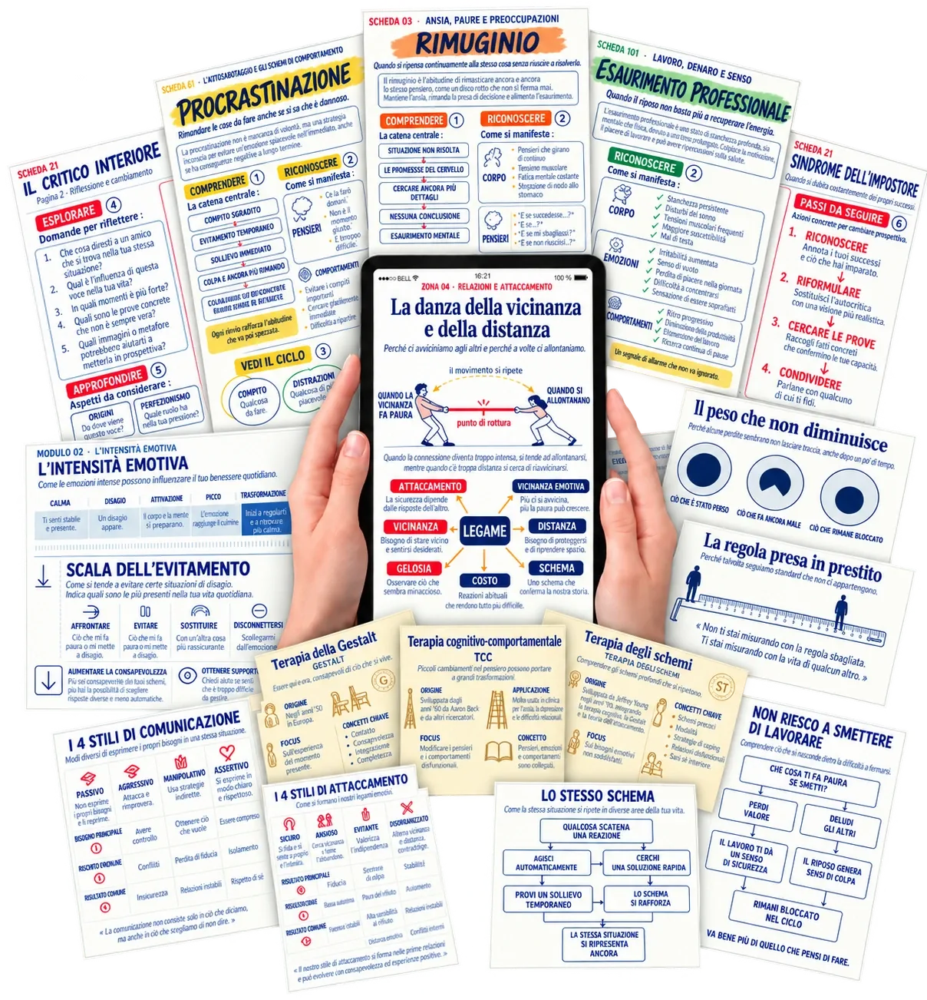

Collezione principale
Visual Therapy Atlas
Trova le mappe mentali, le metafore e gli altri materiali inclusi nell’offerta che hai acquistato.
Visual Therapy Atlas · Il tuo accesso
Ritrova i tuoi acquisti e inizia a esplorare le tue risorse, con i tuoi tempi.
Ritrova i miei acquisti su HotmartAccedi con l’indirizzo e-mail utilizzato per l’acquisto.
L’accesso dipende dall’approvazione del pagamento da parte di Hotmart. Se è ancora in attesa, verifica lo stato nel tuo account.
Le tue risorse, in base al tuo ordine
Apri il prodotto acquistato dal tuo account Hotmart. Le integrazioni sono accessibili solo se le hai aggiunte al tuo ordine.

Trova le mappe mentali, le metafore e gli altri materiali inclusi nell’offerta che hai acquistato.
La biblioteca di 2.000 metafore terapeutiche ha un accesso separato. Cercala nei tuoi acquisti se l’hai aggiunta al tuo ordine.
Hai aggiunto anche schede sulle distorsioni cognitive o esercizi somatici? Trova anche i loro accessi nei tuoi acquisti.
I tuoi primi passi
Usa lo stesso indirizzo e-mail utilizzato per il pagamento. Le informazioni di accesso vengono inviate anche a questo indirizzo dopo l’approvazione dell’acquisto.
Seleziona il prodotto desiderato e apri i dettagli per trovare l’accesso e le informazioni sul tuo ordine.
Apri i contenuti disponibili nell’area del prodotto. Inizia dal tema che ti interessa e consulta le indicazioni d’uso dei materiali.
Hai bisogno di aiuto?
Sì. La biblioteca di 2.000 metafore terapeutiche è un’integrazione facoltativa. Il tuo account dà accesso ai prodotti effettivamente acquistati, in base allo stato di ciascun pagamento.
Controlla l’indirizzo utilizzato per il pagamento e le cartelle spam o promozioni. Puoi anche accedere direttamente al tuo account Hotmart con lo stesso indirizzo.
Controlla lo stato dell’acquisto su Hotmart. La visualizzazione di questa pagina non conferma da sola l’approvazione del pagamento. Attendi l’approvazione e consulta le informazioni sul tuo ordine prima di effettuare un nuovo acquisto.
Nel tuo account Hotmart, apri « I miei acquisti », seleziona il prodotto e visualizza i dettagli. Troverai i recapiti dell’assistenza del venditore.
Non trovi ancora un contenuto previsto?
Consulta il centro assistenza Hotmart Contatta l’assistenza del prodotto